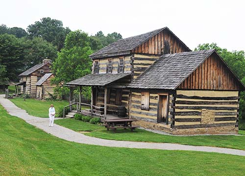

This page will provide information for the exploration of the ethnic, demographic and culture patterns of Westmoreland County, Pennsylvania. The objective is to identify the demographic, ethnic and historical patterns that contribute to the current socio-political and cultural makeup of western Pennsylvania. This is a critical area because it served as the original crossroads of America. All immigrants moving west traversed these lands to reach the Ohio River which took them on to Ohio, Kentucky Missouri and the western territories. Most of the people examined in this study violated the law by moving west of the Allegheny Mountains. The Royal Proclamation of 1763 forbade all residents of any English colony from travelling west of the mountains in order to limit the expense of protecting them. The British king’s budget was stretched thin after the French and Indian War. Thus the character of the people who inhabited this area was uniquely brazen relative to the other colonialists.
The basis for this analysis is Colin Woodward’s recent work, American Nations: A History of the Eleven Rival Regional Cultures in North America. Woodward identified eleven distinct major culture groups that constitute the population of the United States in 2012. He maintains that these groups are spread all over the nation today but not proportionately. Some areas have one or two groups that predominate but there are usually members of each group in every area. These eleven groups are based on cultural roots that may or may not have a basis in ethnicity, religion, economics or other traditional factors. Woodward maintains that examining any area can identify the cultural delineation of that geographic space today. One can take the population of any area and trace it back ten generation to see what the basis for that particular region is. That is what will be accomplished with this examination relative to the key region of Western Pennsylvania.
Immigrants to Western Pennsylvania
Westmoreland County was founded on February 26, 1773 and was the first county in the colony of Pennsylvania west of the Allegheny Mountains. Westmoreland County originally included all of Western Pennsylvania. It encompassed the present-day counties of Fayette, Washington, Greene, Beaver, Allegheny, Indiana and Armstrong counties. The current day county seat is Greensburg. The original county seat was Hannah’s Town. This territory was originally purchased by the descendants of William Penn in order to block out Virginia’s expansion to the west of William Penn’ s original colony. Penn arrived late to America and was challenged on all sides by earlier settlements. Pennsylvania fought two wars with Maryland resulting in the Mason Dixon Line. It faced the Dutch and Scotts to the east and the Swedish encroachment to the south. Virginia, the most powerful adversary had already annexed the territory of Westmoreland into Augusta County and sent George Washington out to protect it.
Derry Township, the largest township in area in Westmoreland County, was organized by the Court of Quarter Sessions in April, 1773. It was the first township established within the county after it was originally chartered. The need for its formation had not grown out of a recent immigration to the area. There had been settlers within its boundaries who had occupied lands since well before 1769 when the first land-office was opened. Earlier in 1773 when Westmoreland County was organized, that part of Derry Township bordering on Hempfield was more thickly settled in some parts than in any other interior sections of the same size in the county.
| Year | Ethnicity |
|---|---|
| 1620s | French |
| 1630s | Swedes |
| after 1630 | English Quakers, Puritans and Catholics |
| 1640s | Dutch |
| 1650s | Scots |
| after 1650 | Africans |
| 1670s | English |
| 1690s | Irish, Welsh and Islanders |
| late 1600s | Germans |
| after 1700 | Swiss Mennonites (Palatines) |
| after 1718 | Scotch Irish |
| after 1844 | Irish Catholic refugees |
| after 1870 | Eastern Europeans |
| after 1928 | Sharecrop refugees from the American South |

Hannastown, the first county seat west of the Alleghenies was destroyed by Indians supported by the British in 1782.